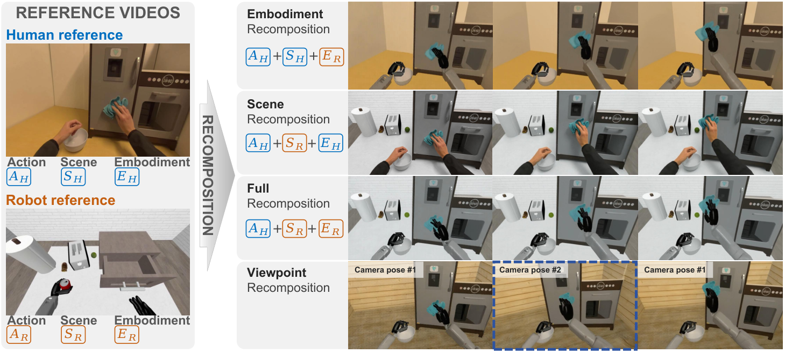
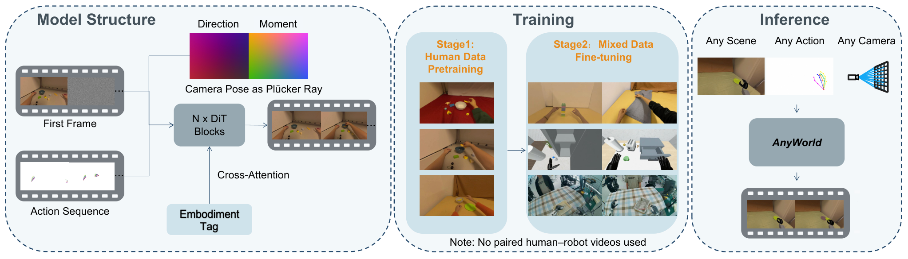

World ModelCross-EmbodimentHuman VideoLatent Diffusion VideoData Generation
제출: 2026-08-29(v1) / 2026-09-01(v2) · 백본 latent diffusion video · 로봇 데이터 증강용 world model
한 줄 요약 (TL;DR)
사람이 1인칭 카메라(에고센트릭)로 찍은 조작 영상 1개를 세 축 — 행동(action) / 카메라 시점 / 몸(embodiment)으로 분해(factorize)하고, 이 세 축을 자유롭게 재조합해 로봇 시점의 학습 데이터(비디오)로 되찾는 world model. RoboCasa GR1 시뮬(18개 pick-and-place)에서 정책 성공률 49.8→54.6%, 실제 IRON 휴머노이드 바나나 잡기 20회에서 20.0→55.0%(+35%p). 즉 "사람 손 영상 1개 → 여러 로봇 몸·여러 카메라 각도의 시연 영상 다수"로 뻥튀기해 로봇 학습을 부트스트랩한다.
1배경 · 문제의식
로봇 조작 데이터는 몸(embodiment)마다 새로 모아야 하고, 시점(카메라 위치)도 몸에 따라 다르다. 반면 사람의 에고센트릭 조작 영상은 스마트폰·안경형 카메라만으로 대량 확보 가능. 문제는 이 사람 영상을 로봇 학습 데이터로 그대로 쓰기 어렵다는 점 — 몸 모양이 다르고 카메라 시점도 다르다. 기존 world model들은 이 셋(행동·시점·몸)을 뒤섞어 다루기 때문에 "같은 조작을 다른 로봇 몸·다른 시점으로 옮겨보기"가 어렵다.
직관: 사람이 "물병을 집는" 영상 하나에서 손 움직임(action), 카메라 각도(view), 손 자체(body)를 각각 뽑아내 서로 갈아끼울 수 있다면, 영상 1개로 "GR1 로봇이 왼쪽 위 시점에서 집기" · "IRON 휴머노이드가 정면 시점에서 집기" 등 여러 로봇용 시연을 자동 생성할 수 있다. AnyWorld는 정확히 그 갈아끼우기를 배운다.
2핵심 Contribution
세 축 분해(factorized) world model — 하나의 상호작용을 행동 스켈레톤 비디오, 카메라 궤적, 몸 지정(초기 프레임+텍스트 태그)로 쪼개 각각 독립적으로 조작 가능. 세 축을 다른 값으로 갈아 넣어 새 rollout을 뽑는다.
사람 대량 사전학습 + 사람·로봇 혼합 파인튜닝 레시피 — 사람 에고 영상으로 프리트레인 후, 사람:로봇 데이터 비율 2:1로 파인튜닝할 때 controllability 평균 0.740으로 최고.
실 로봇 정책 성능 실증 — AnyWorld가 만든 합성 로봇 영상을 정책 학습에 섞으면 UniT 정책의 실 IRON 휴머노이드 성공률이 20→55%로 크게 상승. "world model이 정책을 실제로 좋게 만든다"는 end-to-end 증거.
3Method
세 축을 어떻게 표현하나
Action(행동): 프레임마다 사람/로봇의 스켈레톤(뼈대 관절 위치)을 이미지 위에 그린 렌더링 영상으로 준다. 모터 명령이 아니라 "이미지 공간의 어느 픽셀에서 어떤 움직임이 일어나야 하는지"를 지정하는 몸-무관(embodiment-agnostic) 조밀 모션 컨디셔닝이다. 이 스켈레톤 영상을 인코딩해 잠재 텐서 Za1:T로 사용.
Camera(시점): 각 프레임의 카메라 내·외부 파라미터(intrinsics·extrinsics)를 Plücker ray embedding으로 바꾼다. 픽셀 u에 대해 r(u) = (d(u), o × d(u)) — d는 픽셀이 향하는 광선 방향, o는 카메라 위치, ×는 외적. 이 6차원 벡터를 프레임에 뿌려주면 "카메라가 어디서 어느 쪽을 보는지"를 모델이 픽셀 단위로 안다.
Plücker embedding은 "직선을 6개 숫자로 표현하는 고전적 방식"이다. 카메라 위치·회전을 그대로 4×4 행렬로 넣으면 학습이 안정적이지 않아, 3D geometry에서 흔히 쓰는 정규 표현을 쓴다.
Embodiment(몸): 첫 프레임 이미지(로봇/사람의 외형, 씬, 물체 배치) + 텍스트 태그("RoboCasa GR1", "IRON humanoid" 등). 첫 프레임이 시각 정체성을, 태그가 어떤 로봇이 움직이는지를 알려준다.
World model 아키텍처 — 3-스트림 latent diffusion video
Backbone은 latent diffusion video model(비디오를 잠재공간에서 조금씩 노이즈를 없애며 생성하는 확산 모델)이다. 세 축은 각각 다른 방식으로 주입된다:
Action: 노이즈 잠재 텐서와 채널 차원으로 concat — 매 픽셀마다 어디로 움직이라는 지도.
Camera: Plücker embedding을 얇은 adapter로 변환해 패치 임베딩에 더해 넣는다.
Embodiment/Caption: 텍스트·이미지 임베딩으로 만든 뒤 cross-attention으로 각 트랜스포머 블록에 주입.
훈련은 표준 diffusion loss로, 목표 영상(target)은 실제 사람/로봇 상호작용 클립. 학습 후에는 세 컨디셔닝을 자유롭게 갈아 넣어 새 영상을 뽑는다.
훈련 데이터·전략
사람 에고센트릭 상호작용 데이터(대량) + 로봇 도메인(RoboCasa GR1 시뮬 + 실 IRON) 데이터. 파인튜닝 시 사람:로봇 = 2:1이 최적. 너무 사람 쪽으로 치우치면(4:1) 로봇 몸 인식이 약해지고, 1:1이면 모션·시점 다양성이 줄어든다.
학습된 model의 사용법: (a) source 사람 영상에서 action 비디오와 camera 궤적을 추출 → (b) target 몸(예: IRON)의 초기 프레임과 텍스트 태그를 준비 → (c) world model이 "IRON이 그 손 궤적·그 카메라 시점으로 같은 조작을 하는" 로봇용 영상을 생성. 이 합성 영상 + 스켈레톤에서 유도한 로봇 액션을 정책 학습에 섞는다.
4실험 결과
Controllability — 조건대로 영상을 생성하는가 (표 1)
모델
ActionAlign
CameraAlign
EmbodAcc
Avg
Cosmos-Predict2.5
—
0.417
WAN Fun-Control
—
0.609
AnyWorld
0.623
0.754
0.842
0.778
ActionAlign: 스켈레톤 조건을 얼마나 정확히 따라 움직이는가. CameraAlign: 지정된 시점 궤적과 실제 렌더가 얼마나 일치. EmbodAcc: 지정한 몸(로봇 종류)이 생성 영상에 정확히 나타나는가. 세 축 모두에서 기존 controllable video 모델 대비 크게 우위.
Video 품질 — 시각 일관성 (표 2)
지표
Subject Consistency
Background Consistency
Flicker
Smoothness
VBench Avg
AnyWorld
0.942
0.949
0.995
0.996
0.971
주체/배경 일관성과 프레임간 flicker(깜빡임), motion smoothness 모두 안정. 즉 "생성 영상이 학습용으로 쓸 만한 수준"임을 시사.
정책 학습에 실제로 도움이 되는가 (핵심)
세팅
AnyWorld 데이터 미사용
사용
변화
RoboCasa GR1 (18 pick-and-place, 시뮬)
49.8%
54.6%
+4.8%p
실 IRON 휴머노이드 (banana grasp, 20회)
20.0%
55.0%
+35.0%p
매크로 평균
34.9%
54.8%
+19.9%p
기저 정책은 UniT. AnyWorld가 만든 합성 로봇 영상을 학습 데이터에 섞으면 실 로봇에서 특히 큰 이득. 실제 로봇 데이터 수집이 어려운 상황에서 human video → robot video 변환이 스케일 부트스트랩으로 유효.
5Ablation (주요 발견)
사람:로봇 혼합 비율 (표 3): 2:1이 최적. 4:1(사람 편중)은 EmbodAcc 0.789, 1:1은 CameraAlign이 상승하지만 ActionAlign이 소폭 감소. 2:1이 세 축 평균 0.740으로 최상 — 사람의 다양한 시점·행동을 배우면서도 로봇 몸 정체성을 유지하는 데 필요한 균형점.
Baseline 대비 controllability 격차: Cosmos-Predict2.5(0.417), WAN Fun-Control(0.609) 대비 AnyWorld(0.778)로 세 축을 명시적으로 분리해 컨디셔닝하는 설계의 이득이 크다. 특히 EmbodAcc(몸 정확도) 0.842는 baseline보다 크게 앞선다 — 텍스트 태그+초기 프레임의 이중 조건이 몸 정체성 유지에 중요.
Zero-shot recomposition: 학습 때 본 몸/시점 조합이 아니어도 세 축을 새로 조합해 rollout 가능(그림 3). 사람 → GR1 · 사람 → IRON 모두 zero-shot으로 성공.
6핵심 Figure / Table

Figure 1 — From Human Experience to Diverse Robot Experiences. 위: 사람 에고센트릭 상호작용 하나를 주면, 모델이 상호작용 dynamics를 유지한 채 여러 몸·시점·씬 구성으로 로봇 rollout을 생성. (출처: arXiv:2608.29242)

Figure 2 — Method overview. AnyWorld는 action video(스켈레톤 렌더링), camera control(Plücker embedding), embodiment tag(초기 프레임+텍스트)를 각각 채널 concat/patch add/cross-attention으로 latent diffusion video 백본에 주입해 에고센트릭 rollout을 생성. (출처: arXiv:2608.29242)
Table 1(Controllability)이 논문의 핵심 정량 근거 — 3축 분해 설계가 baseline 대비 AnyWorld의 0.778 vs 0.609(WAN Fun-Control)로 큰 격차. 특히 EmbodAcc(0.842) 축에서 새로운 로봇 몸을 지시대로 재현하는 능력이 두드러진다.